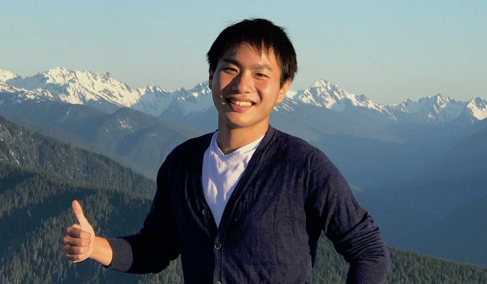

Shumon Koga
|  | Shumon Koga |
Education
Ph.D. in Mechanical and Aerospace Engineering, University of California, San Diego, 2020
M.S. in Mechanical and Aerospace Engineering, University of California, San Diego, 2016
B.S. in Applied Physics, Keio University (2014),
Experience
Nonlinear and Adaptive Control Laboratory, Graduate Student Researcher, 2014-2020
Mitsubishi Electric Research Laboratories (MERL), Intern, 2018
NASA Jet Propulsion Laboratory (JPL), Visiting Student Research Program, 2017
Rensselaer Polytechnic Institute (RPI), Visiting Research Scholar, 2017
Awards
Robert E. Skelton Systems and Control Dissertation Award, UCSD Center for Control Systems and Dynamics, 2020
O. Hugo Schuck Best Paper Award, American Automatic Control Council, 2019
Outstanding Graduate Student Award, UCSD/MAE, 2018
Current Research Topics
Robotics
Simultaneous Localization and Mapping (SLAM)
Path Planning
Dynamics Learning
Machine Learning
Past Research Topics
PDE Control and Estimation
Optimization and Learning by Extremum Seeking
Additive Manufacturing (3D Printing)
Battery Management Systems
Climate Dynamics and Arctic Sea Ice
 |
|